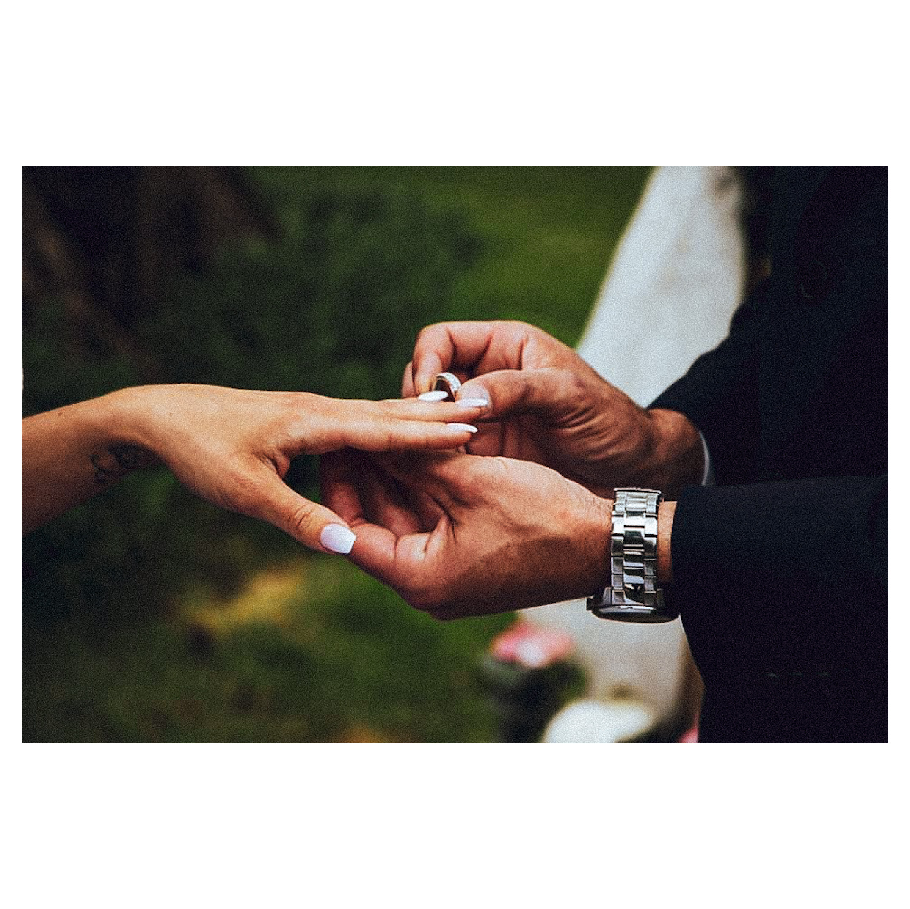
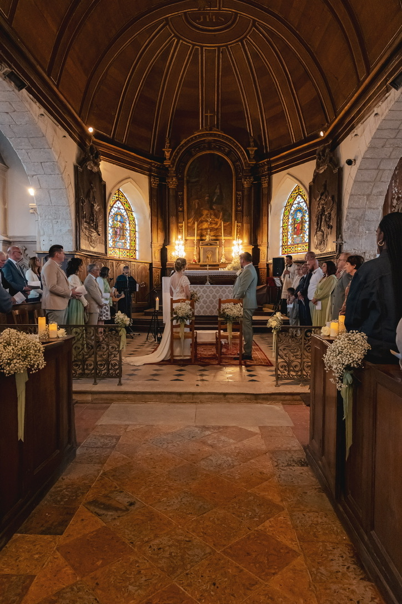

Photographe & graphiste — depuis 2010
Votre histoire
en lumière.
Mariages, portraits, institutions, entreprises : je capture vos moments et vos projets pour en faire des images qui durent.
- 10+ mariages / an
- 200+ concerts, événements & festivals couverts
- 15 ans en communication publique et institutionnelle

Des souvenirs qui traversent le temps
Mariage, anniversaire, baptême, shooting portrait ou famille : chaque moment important mérite d'être immortalisé avec soin. Je capture vos émotions pour en faire des souvenirs intemporels.
Tarifs indicatifs — chaque projet est différent, contactez-moi pour un devis adapté à vos attentes et à votre budget. Réservez votre date →
Un regard professionnel pour vos événements
Vous êtes une commune, une institution, une entreprise ? Je valorise vos événements, vos équipes et vos projets à travers des images prêtes à l'emploi pour votre communication.
Devis sur demande pour les collectivités et entreprises. Contactez-moi →
Ils m'ont fait confiance : Mairies de Magny-en-Vexin et Villiers-le-Bel, Cabinet du Préfet du Val-d'Oise, services de l'État — et côté scène, plus de 200 concerts, événements et festivals couverts, pour des artistes comme La Fouine, Alain Chamfort, Nina Thuram ou Dany Boon.
Des visuels impactants au service de vos messages
Plus de 15 ans d'expérience en communication publique et institutionnelle : magazines municipaux, campagnes électorales, affiches, rapports d'activité. J'ai notamment conçu la communication et les affiches de la ville de Magny-en-Vexin en tant que chargé de communication, et réalisé le rapport d'activité de la Préfecture du Val-d'Oise.
Contactez-moi pour un projet sur-mesure. Discutons-en →
Lens Cap
Mon magazine photo auto-édité, pensé comme un carnet de voyage visuel. Chaque numéro vous plonge dans un univers à travers mes images, mes récits et mon regard.
Pour commander un numéro, contactez-moi directement.
Tirages photographiques
Certaines de mes photographies sont disponibles en tirages, imprimés sur papier d'art de haute qualité et livrés avec certificat d'authenticité.

Wilfried Koba
Photographe et graphiste professionnel, je mets mon expérience au service des particuliers, des communes et des institutions. Depuis plus de 15 ans, je travaille dans la communication publique et institutionnelle : magazines municipaux, campagnes électorales, affiches, rapports d'activité, communication préfectorale...
En tant que photographe, j'accompagne :
- des particuliers pour leurs mariages, anniversaires, portraits et événements familiaux ;
- des collectivités (Mairies de Magny-en-Vexin, Villiers-le-Bel…) pour leurs reportages officiels, portraits institutionnels et événements culturels ;
- des institutions (Cabinet du Préfet du Val-d'Oise, services de l'État, établissements publics) pour leurs reportages, portraits et documents de communication.
En tant que graphiste, j'ai conçu et mis en page :
- des magazines municipaux et publications locales ;
- des campagnes électorales complètes (affiches, programmes, flyers) ;
- des plaquettes institutionnelles et rapports d'activité ;
- des supports variés, du print aux outils digitaux.
Mon approche est simple : allier rigueur professionnelle et regard créatif pour raconter vos histoires, mettre en lumière vos projets et créer des visuels qui marquent.
Discutons de votre projet« Un grand merci pour les photos qui sont vraiment à l'image de ce que j'avais imaginé, elles sont magnifiques ! Vous avez su saisir chaque instant et le résultat est parfait. Tout le monde vous a trouvé très sympathique et je saurai recommander vos services. »
Angélique — Mariage
« Plus qu'une journée de shooting, c'est un vrai moment de vie que nous avons partagé avec Wilfried. Il a su nous mettre à l'aise et le résultat dépasse nos espérances : les photos sont fidèles à la réalité et il a parfaitement su cerner nos attentes. Wilfried est un photographe "pépite", vous pouvez aller le voir les yeux fermés ! »
Emma, Rémi, Hortense & Hector — Séance famille
« Wil, je suis plus que ravi de t'avoir confié cette tâche, c'est exactement ce que je souhaitais : des instants de vie qui vont rester gravés dans nos cœurs. Merci beaucoup pour ce travail magnifique. »
Avis client — Mariage
« Je viens de voir les photos et elles sont superbes ! Merci beaucoup, de la part de tous, pour nous avoir permis de garder un souvenir de ce moment unique pour notre famille. »
Avis client — Anniversaire enfant
Votre projet mérite d'être bien raconté
Mariage, portrait, reportage d'entreprise, événement, graphisme ou commande de magazine : décrivez-moi votre besoin, je vous réponds sous 24h avec un devis adapté à votre budget.